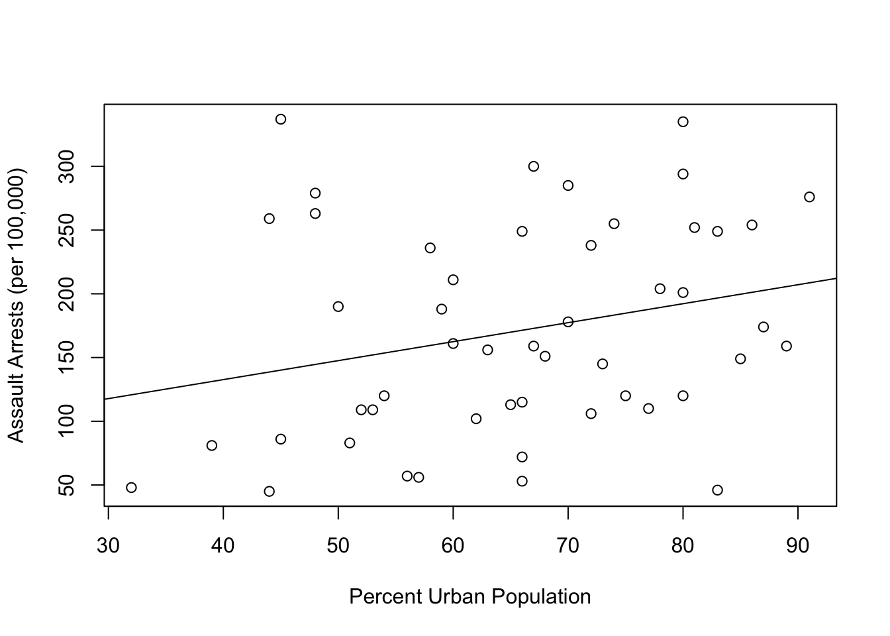

Collaborating in Rmarkdown
Introduction
This is an R Markdown document. Markdown is a simple formatting syntax for authoring HTML, PDF, and MS Word documents. For more details on using R Markdown see http://rmarkdown.rstudio.com. When you click the Knit button a document will be generated that includes both content as well as the output of any embedded R code chunks within the document. R Markdown can do the majority of things a typical word processing program (e.g., Microsoft Word), but requires a bit of knowledge about how the syntax works. There’s a lot of help online, but the things I tended to use most when I first started were the RMarkdown Cheat Sheet and Reference guide (got to Help > Cheatsheets inside RStudio) and the Markdown syntax page.
For this exercise, I’m going to assign Issues to each of you via our group page at Github. You will create a fork of the repository, complete the Issue assigned to you, commit your changes, push them up to the remote version of your fork, and then issue a “pull request” so I can merge the changes. I’ve set up the document to resemble a simple manuscript format with an Intro, Methods, Results section so you can see the utility of building your code right into documents. We’ll play with formatting, citations, and more complex stuff later on. For now, I just want to demonstrate the workflow.
Introduction
This is where you frame the research question you plan to address in your manuscript. You’ll probably want to reference some relevant literature (I’ll show you this later), clarify where your questions/hypotheses fit in that literature, and maybe even include a conceptual model to help illustrate how the pieces fit together. I’m going to assign an issue on github to a few of you to fill in this part of the document with:
A brief description of a webpage you like along with an inline link to that webpage.
An image along with a brief description of what’s in the image and where it came from (note that you should save the image into the “images” folder that clones with the repository)
Methods
This is where Rmarkdown starts to become really useful. You can describe the methods you are using at the same time that you begin to implement them. You do this using code chunks like this one:
summary(cars)## speed dist
## Min. : 4.0 Min. : 2.00
## 1st Qu.:12.0 1st Qu.: 26.00
## Median :15.0 Median : 36.00
## Mean :15.4 Mean : 42.98
## 3rd Qu.:19.0 3rd Qu.: 56.00
## Max. :25.0 Max. :120.00You’ll notice that you can include code chunks from several different languages (R, python, stan) this can be useful if you’re programming across platforms, but I’ve found the implementation for languages outside of R to be pretty difficult.
The Methods section is usually reserved for descriptions of the analysis and possibly some summary information about the study sites rather than the results of the analysis that you conduct. As such, we’re going to focus on displaying some summary data on the different datasets that ship with R. I’ll assign an issue on github to have someone: * display the summary stats of the “iris” dataset
display the summary stats of the “PlantGrowth” dataset
display the summary stats of the “USArrests” dataset
Results
Now it’s time to show the results of some of your analyses. Again, you’ll use code chunks like the one below to develop plots of your analyses. Note the use of the “echo=FALSE” command in the code chunk. This suppresses the code from rendering when you knit the document. I generally leave this set to “TRUE” when I’m in the draft stage, as that let’s other folks double-check my coding.

Then I switch it to “FALSE” when i’m ready to move towards a final product. I’ll assign issues to several of you to:
make a correlation plot of the numeric values in the iris dataset (using the package ‘corrplot’ )
plot a regression line of the relationship between UrbanPop and Assault using the ‘lm’ command and the USArrests data
#Create regression between Urban Population and assaumt arrests (per 100,000)
Regression<-lm(Assault ~ UrbanPop, USArrests)
#plot the regression line on top of a scatter plot
with(USArrests, plot(UrbanPop,Assault,xlab = "Percent Urban Population", ylab = "Assault Arrests (per 100,000)" ))
abline(Regression)
plot a histogram of the ‘weight’ variable in the PlantGrowth dataset
Use the kableExtra package to create atable of the regression results from a linear regression of the relationship between Sepal.Length and Petal.Length in the iris dataset.
Remember, you can use ? to at the prompt to learn more about a command (e.g., ?plot will tell you about the usage of the plot command). Send me questions if you need help!! Good luck.